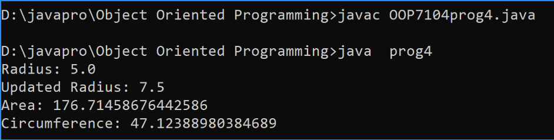

Write a Java program to create a class called "Circle" with a radius attribute. You can access and modify this attribute. Calculate the area and circumference of the circle.
Code:-
class prog4 {
private double radius;
public prog4(double radius) {
this.radius = radius;
}
public double getRadius() {
return radius;
}
public void setRadius(double radius) {
this.radius = radius;
}
public double calculateArea() {
return Math.PI * radius * radius;
}
public double calculateCircumference() {
return 2 * Math.PI * radius;
}
public static void main(String[] args) throws java.lang.ClassNotFoundException {
prog4 myCircle = new prog4(5.0);
System.out.println("Radius: " + myCircle.getRadius());
myCircle.setRadius(7.5);
System.out.println("Updated Radius: " + myCircle.getRadius());
double area = myCircle.calculateArea();
double circumference = myCircle.calculateCircumference();
System.out.println("Area: " + area);
System.out.println("Circumference: " + circumference);
}
}
Output:-
